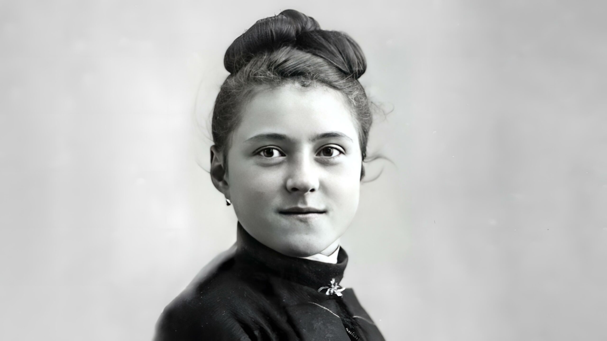

Vida e Obra
Nascida em 2 de janeiro de 1873 em Alençon, na França, com o nome de Marie-Françoise-Thérèse Martin, ela teve uma vida curta, mas profundamente marcada pela espiritualidade e pela devoção a Deus. Desde muito jovem, Teresinha sentiu o desejo de dedicar-se totalmente a Cristo. Aos 15 anos, ela entrou para o convento carmelita de Lisieux, onde adotou o nome de "Teresinha do Menino Jesus e da Sagrada Face". Em sua vida no Carmelo, ela desenvolveu o que ficou conhecido como a "Pequena Via" — um caminho espiritual que enfatizava a simplicidade, a humildade e a entrega total ao amor divino. A ideia central de sua espiritualidade era fazer "pequenas coisas com um grande amor" e ver o amor de Deus em todos os momentos da vida, independentemente das dificuldades. Santa Teresinha enfrentou uma longa e dolorosa batalha contra a tuberculose, doença que acabou levando-a à morte em 30 de setembro de 1897, aos 24 anos. Mesmo diante do sofrimento físico e espiritual, ela manteve-se fiel ao seu ideal de viver no amor, entregando-se completamente a Deus. Após sua morte, Santa Teresinha se tornou conhecida mundialmente graças ao seu diário, "História de uma Alma", no qual descreve sua vida espiritual e sua busca por Deus. Sua influência foi tão grande que, em 1925, ela foi canonizada pelo Papa Pio XI e declarada "Padroeira das Missões" em 1927. Em 1997, o Papa João Paulo II proclamou-a Doutora da Igreja, em reconhecimento à profundidade de sua espiritualidade e de seus ensinamentos. Santa Teresinha é lembrada como a "Santa das Rosas", pois muitos devotos acreditam que ela responde às orações enviando rosas como sinal de sua intercessão. Ela é um exemplo de simplicidade e pureza de coração, uma inspiração para aqueles que buscam uma vida de amor e fé, e um ícone da confiança total em Deus.
